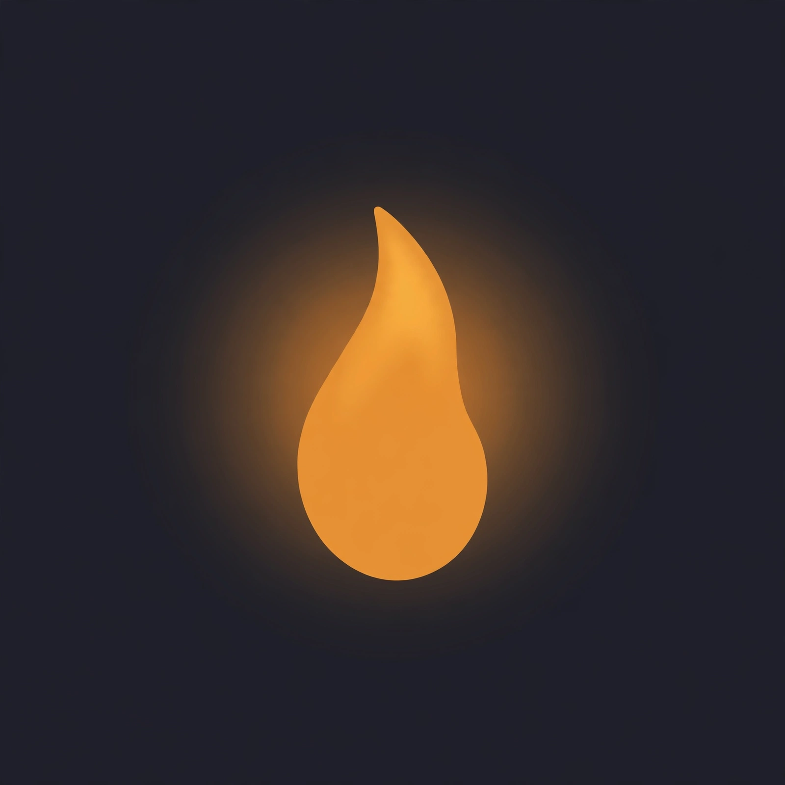

SEOUL
Seoul is a music factory with better R&D than most tech companies — the K-pop machine of BTS and Stray Kids is the most ruthlessly efficient hit-making system on Earth. But underneath the idol machine, Hongdae's clubs and basements keep the underground honest: HYUKOH, the indie scene, and the kids who'd rather play a 200-cap room than a stadium. Two cities, one subway system.
Seoul is a music factory with better R&D than most tech companies: the K-pop machine — BTS, Stray Kids, NewJeans — running alongside Hongdae's indie underground. The Beatwick 30: Seoul puts the idol machine and the 200-cap basement on the same dial.
THE PLAYLIST
REFRESHES WEEKLYBEATWICK 30: SEOUL
WEEK OF OCTOBER 12, 2026ROSÉ & Bruno Mars NEW ● NEW 02 Dynamite
BTS NEW ● NEW 03 God's Menu
Stray Kids NEW ● NEW 04 Tomboy
HYUKOH NEW ● NEW 05 Cupid
FIFTY FIFTY NEW ● NEW 06 Gangnam Style
PSY NEW ● NEW 07 Super Shy
NewJeans NEW ● NEW 08 Feel Special
TWICE NEW ● NEW 09 Love Scenario
iKON NEW ● NEW 10 Bang Bang Bang
BIGBANG NEW ● NEW 11 Butter
BTS NEW ● NEW 12 Like Crazy
Jimin NEW ● NEW 13 Seven
Jung Kook NEW ● NEW 14 Magnetic
ILLIT NEW ● NEW 15 Hype Boy
NewJeans NEW ● NEW 16 I AM
IVE NEW ● NEW 17 Supernova
aespa NEW ● NEW 18 Chk Chk Boom
Stray Kids NEW ● NEW 19 Fancy
TWICE NEW ● NEW 20 Plot Twist
TWS NEW ● NEW 21 Bam Yang Gang
BIBI NEW ● NEW 22 Love Shot
EXO NEW ● NEW 23 Pink Venom
BLACKPINK NEW ● NEW 24 How You Like That
BLACKPINK NEW ● NEW 25 Back Door
Stray Kids NEW ● NEW 26 Drama
aespa NEW ● NEW 27 Fake Love
BTS NEW ● NEW 28 Heya
IVE NEW ● NEW 29 Spicy
aespa NEW ● NEW 30 Boy With Luv
BTS NEW ● NEW
Editorial chart — the idol machine and the Hongdae basement on one dial. Curated by humans with opinions, updated weekly. Not affiliated with any label, agency, or fandom army. Disagree? Vote on the Beatwick 30 below.
NEW TO THE DIAL
ALL SPOTLIGHTS →
Parannoul
Seoul's anonymous bedroom student who accidentally became the global face of Korean shoegaze — an 8.0 from Pitchfork and still no name.
READ THE SPOTLIGHT →Rad Museum
The DEAN-discovered alt-R&B singer who designs his own album covers, earned KMA nominations on his very first EP, and makes sadness sound expensive.
READ THE SPOTLIGHT →BTS
From a cramped Seoul dorm to the biggest band on the planet — BTS never left the city behind, they carried it with them.
READ THE SPOTLIGHT →IU
Seoul's “nation's little sister” who grew up in public and became the city's most trusted voice.
READ THE SPOTLIGHT →G-Dragon
Seoul's fashion-alien pop auteur — half the reason K-pop looks the way it does.
READ THE SPOTLIGHT →THE ROOMS
Olympic Hall
Olympic Park's big room — K-pop's graduation stage for acts outgrowing theatres.
Yes24 Live Hall
Gwangjin's mid-size workhorse — the room where the fanbases get built.
Rolling Hall
Hongdae's indie institution — where Korea's underground has been loud since the '90s.
FAQ
What defines Seoul's music scene right now?
The K-pop machine — BTS, Stray Kids, NewJeans — running on the most ruthlessly efficient hit-making system on Earth, with Hongdae's clubs and basements keeping the underground honest.
What is the trainee system?
Seoul's idol pipeline: years of singing, dance, and media training before debut. Our scene report breaks down how it became pop music's most ruthless instrument.
Which Seoul venues should I know?
Olympic Hall in Olympic Park for K-pop's graduation nights, Yes24 Live Hall in Gwangjin for the mid-size grind, and Rolling Hall in Hongdae — the indie institution loud since the '90s.
Who are the new names on Seoul's dial?
Parannoul, the anonymous bedroom producer who became the global face of Korean shoegaze, and Rad Museum, the alt-R&B singer making sadness sound expensive.
THINK THE CHART'S WRONG?
Thirty tracks, one city, zero consensus. Vote for the Seoul records that deserve to move — results feed the Beatwick 30.